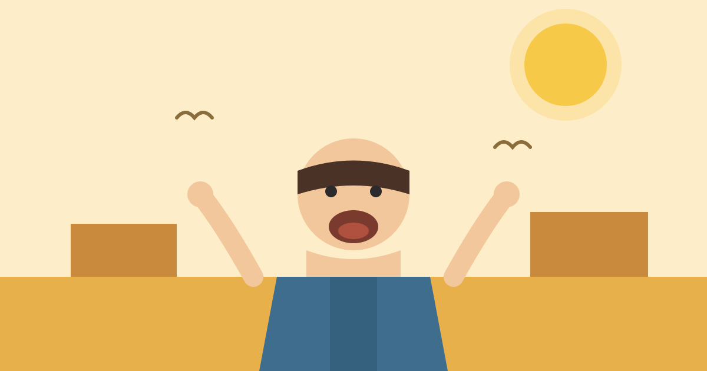

Why Do We Yawn?

It starts before you can stop it. Your mouth opens wide, you take a long, deep breath, your eyes water a little, and then it is over — usually in about six seconds. You have just yawned. It is one of the most ordinary things a body does, yet it is also one of the strangest: you do it before you are even born, you do it when you are tired, when you are bored, when you wake up, and sometimes for no clear reason at all.
The short answer is that a yawn is a reset button. It is a big, slow stretch for your lungs, your jaw and your brain, and it usually shows up when your brain wants to wake up, cool down, or change state.
What Actually Happens When You Yawn
A yawn is not just an open mouth. It is a coordinated move involving several parts of your body at once. Your jaw drops open, your chest expands, and you breathe in deeply — much more air than a normal breath takes in. At the same time, the muscles in your face stretch, your eardrums flex, and your eyes often water. Then comes a shorter breath out, and everything relaxes.
The whole thing is automatic. You cannot easily start a real yawn on purpose, and once one begins, it is very hard to stop halfway. That is because yawning is run by the older parts of the brain, the same parts that handle breathing, swallowing and blinking without asking your permission. You can hold your breath for a while if you try, but a yawn slips past your control in much the same way a sneeze does.
We start yawning before birth. Scans have caught unborn babies yawning in the womb, weeks before they take their first breath of air. That tells us yawning is not a learned habit or something we copy from other people. It is built into us from the start, like breathing itself.
Why Your Brain Wants That Big Breath
For a long time, the popular explanation was simple: yawning gives you more oxygen. The idea was that when you are tired or bored, your brain runs low on oxygen, and a yawn tops it up. It sounds neat, but experiments have not supported it. People who breathe air with extra oxygen yawn just as much, and people who breathe air with extra carbon dioxide do not yawn more. So oxygen is probably not the point.
The explanation most scientists favour today is about temperature. Your brain works best within a narrow range of warmth, and like any hard-working machine, it heats up as it runs. A yawn may help to cool it down. The deep breath pulls cool air in, the stretching of the jaw increases blood flow around the skull, and the rush of air through the nose and mouth helps carry heat away. It works a little like opening a window in a stuffy room.
That fits with what we observe. People yawn more when the air around them is warm, and less when it is cool. In one well-known study, people holding a cold pack against their forehead yawned far less often than people holding a warm pack. It is not proof on its own, but it points in the same direction: yawning is connected to keeping the brain at the right temperature.
There is a second job a yawn may do, and it is about alertness. The deep breath and the stretch send a burst of signals through the body, waking up the systems that have gone quiet. That is why a yawn often comes just before a change of state — when you are about to fall asleep, when you have just woken up, or when you are shifting from one task to another. It is the body shaking itself awake, or settling itself down, for what comes next.
Why Tiredness and Boredom Bring It On
If yawning is a reset, it makes sense that it appears most when the brain is running down. When you are tired, your brain temperature rises slightly and your attention fades, and a yawn arrives as a small attempt to sharpen things up. It does not cure tiredness — nothing but sleep does that — but it is the body's way of buying a little alertness.
Boredom works in a similar way. When nothing is holding your attention, your brain's activity drops, its temperature creeps up, and the same reset triggers. That is why yawning is so common in long meetings, quiet lectures and slow car journeys. It is not a sign that you are lazy or rude. It is a sign that your brain is under-stimulated and is trying to wake itself up.
Waking up is another classic moment. After hours of sleep, your body temperature is at its lowest and your brain is still warming up to the day. A big yawn in the first minutes after waking is part of that warming-up process, stretching the jaw and lungs that have been still all night.
Why Yawns Spread From Person to Person
Perhaps the strangest thing about yawning is that it is contagious. See someone yawn, hear a yawn, or even read the word yawn, and you may feel one coming yourself. Studies find that about half of adults will yawn within a few minutes of seeing someone else do it — and reading this article may have already set one off.
Nobody knows exactly why this happens, but the leading idea is that it is a social reflex. Humans are wired to mirror the people around them: we copy smiles, we copy posture, and we copy yawns. The parts of the brain that handle empathy and reading other people's states seem to be involved, and people who score higher on empathy tests tend to catch yawns more easily. It may be an old signal, a way for a group to stay in the same state of alertness — if one member is winding down, the rest follow.
Animals do it too. Dogs yawn after watching their owners yawn, and chimpanzees catch yawns from each other. The reflex is older than language, which is another clue that yawning is deeply built in rather than learned.
Common Mistakes
The first mistake is thinking a yawn means you are short of oxygen. It does not. The oxygen idea was popular for decades, but the evidence does not support it, and breathing extra oxygen does not stop yawning.
The second mistake is thinking that yawning in a meeting means you do not care. It usually means the opposite — your brain is trying hard to stay awake and pay attention, and the yawn is part of that effort.
The third mistake is thinking that yawning too much is always a problem. Most yawning is completely normal. But yawning far more than usual, day after day, especially together with other changes like constant drowsiness, is worth mentioning to a doctor, because in rare cases it can be linked to sleep problems or other conditions. That is a matter for a doctor to judge, not something to diagnose from yawning alone.
Frequently Asked Questions
Can you stop a yawn once it starts?
Not really. A yawn is a reflex run by the older parts of the brain, and once it begins it usually runs its course in about six seconds. You can sometimes delay it by breathing through your nose or pressing your tongue to the roof of your mouth, but most of the time it is easier to let it happen.
Why do my eyes water when I yawn?
The big stretch squeezes the glands around your eyes, and the deep breath changes the pressure in your face. Both can push a few tears out. It is harmless, and it passes in seconds.
Is it rude to yawn in front of people?
It can look that way, but it is usually not a choice. A polite trick is to cover your mouth and breathe through your nose, which can soften the yawn without fighting it. Most people understand that a yawn is automatic, not an insult.
Conclusion
A yawn is a small, automatic reset: a deep breath, a stretch of the jaw, and a rush of signals that cool the brain and shake it awake. It shows up when you are tired, bored, or just waking up, and it spreads to the people around you because our brains are built to mirror each other. It is not a sign of low oxygen and not a sign of rudeness — it is one of the oldest reflexes we have, running since before we were born. Next time one catches you, you will know what it is doing: giving your brain a brief, built-in wake-up call.